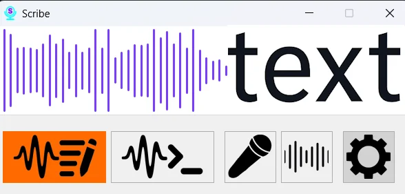
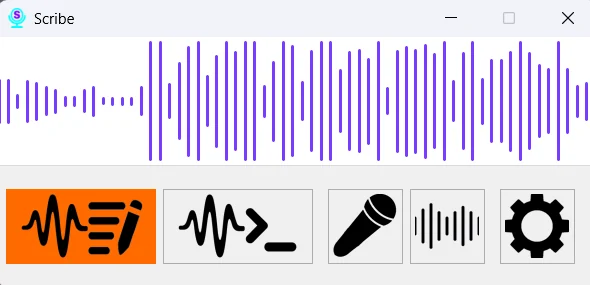
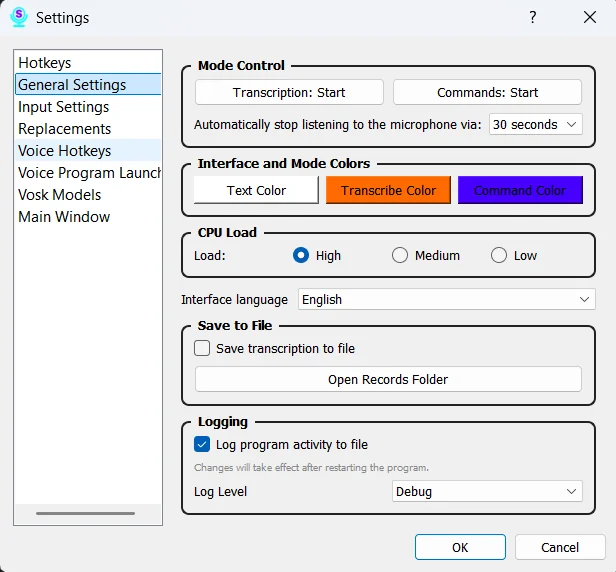
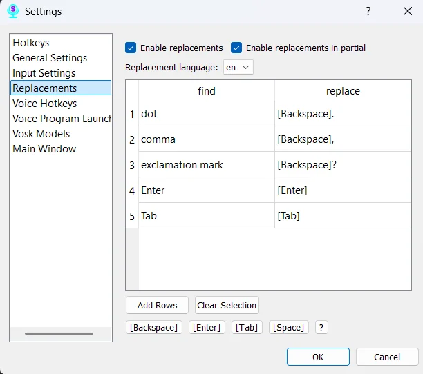

Диктовка куда угодно
Текст вставляется в активное поле Word, браузера, мессенджера или редактора кода.
Windows · Голосовой ввод
Голосовой ввод и команды — речь обрабатывается на компьютере.
Scribe превращает компьютер в устройство с голосовым управлением: диктуйте текст в любое приложение, запускайте программы и автоматизируйте рутину. Распознавание Vosk работает офлайн, без отправки речи в облако.
Портативная сборка ≈ 93 МБ: установка не требуется. Языковые модели Vosk скачиваются отдельно.

Возможности
По документации проекта
Текст вставляется в активное поле Word, браузера, мессенджера или редактора кода.
Vosk обрабатывает речь на компьютере: аудио не отправляется в облако.
Запускайте программы и файлы и выполняйте повторяющиеся действия одной фразой.
Фраза «моя почта» раскрывается в адрес, а длинные термины подставляются целиком.
Скачивайте разные модели Vosk и переключайтесь между ними горячими клавишами.
Старт и стоп диктовки без мыши — сочетания настраиваются под ваш ритм.
Интерфейс
Реальные экраны приложения



Данные и лицензия
До установки
Scribe распознаёт голос локально с помощью Vosk. Аудио не уходит в облако, аккаунт не нужен — интернет понадобится только для скачивания языковых моделей.
Код, сборка и релизы доступны на GitHub. Можно скачать готовый Scribe.exe или собрать приложение самостоятельно.
| Платформа | Windows 7 (64-bit) и новее |
|---|---|
| Linux | Версия 1.2+ с X11; Wayland не поддерживается |
| Версия | 1.3.0 |
| Лицензия | MIT |
| Дистрибутив | Scribe.exe, ≈ 93 МБ |
| Установка | Не требуется, портативная сборка |
| Интернет | Для скачивания моделей Vosk |
| Исходники | github.com/AIgrator/Scribe |
GitHub Releases
Windows 7+ · 64-bit · MIT · Без установки
Ещё на Windows
Все программы